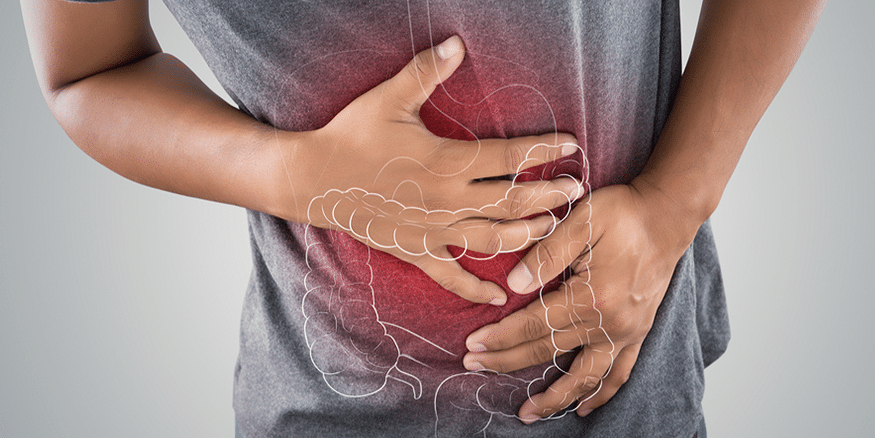
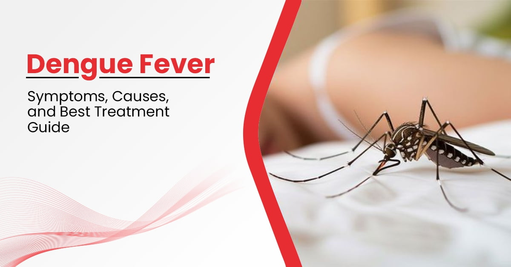
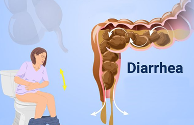

Common Cold
- About: A mild viral infection affecting the nose and throat.
- Symptoms: Runny nose, sore throat, sneezing, mild fever.
- Do's: Drink warm fluids, rest, use saline sprays.
- Don'ts: Don’t share utensils or go out if contagious.
- Precautions: Handwashing, avoid close contact with infected people.
- Concern: Symptoms lasting more than 10 days or worsening.

Constipation
- About: Infrequent or difficult bowel movements.
- Symptoms: Hard stools, bloating, abdominal discomfort.
- Do's: Eat fiber-rich foods, drink plenty of water, stay active.
- Don'ts: Avoid junk food, don't ignore the urge to go.
- Precautions: Maintain hydration and fiber intake daily.
- Concern: No bowel movement for several days or severe pain.

Dengue
- About: Mosquito-borne viral infection causing flu-like symptoms.
- Symptoms: High fever, severe headache, muscle and joint pain.
- Do's: Drink plenty of fluids, take rest.
- Don'ts: Avoid aspirin or ibuprofen.
- Precautions: Use mosquito repellents, wear full clothing.
- Concern: Signs of bleeding or severe abdominal pain.
Diabetes
- About: A metabolic disorder where the body cannot regulate blood sugar.
- Symptoms: Frequent urination, fatigue, blurry vision.
- Do's: Monitor glucose, eat balanced diet.
- Don'ts: Avoid high-sugar and high-carb foods.
- Precautions: Regular exercise, medication adherence.
- Concern: Uncontrolled blood sugar or symptoms worsen.

Diarrhea
- About: Frequent, loose, or watery bowel movements.
- Symptoms: Loose stools, abdominal cramps, dehydration.
- Do's: Stay hydrated, eat bland food.
- Don'ts: Avoid greasy and spicy food.
- Precautions: Drink clean water, maintain hygiene.
- Concern: Severe dehydration or bloody stools.